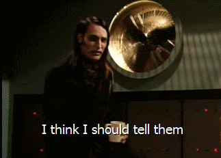
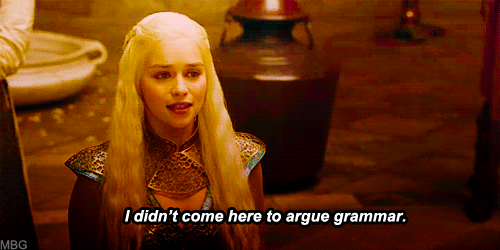
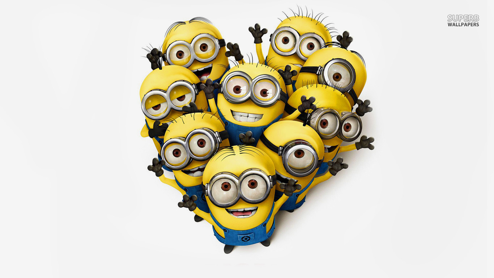

@ClaireReynaud


revues de code ?{top-left darkened white} ## Détecter un maximum de problèmes avant qu'ils arrivent en production - Code pas clair, difficilement maintenable - Bugs - Cas de tests oubliés - Code qui ne correspond pas au besoin - Code où on a réinventé la roue ... ## Quels sont les bénéfices
des revues de code ?{top-left darkened white}  # Faire émerger des bonnes pratiques{title} # Profiter des différentes expériences de chacun{title} # Transmettre les connaissances dans l'équipe{title} # Augmenter la qualité{title} #{title} # Responsabilité collective du code{title} ## Comment mettre en place des revues de code ?{bottom-left darkened white} # Avant tout c'est une décision d'équipe{title} # Se mettre d'accord : en quoi consiste une revue{title} ## Par exemple, vérifier que : - Le code répond au besoin - Le code est utile (on ne pas réinvente pas la roue) - Le code est maintenable et compréhensible - Le code n'a pas de bugs a priori - Les cas couverts par les tests sont suffisants - Si besoin vérifier les aspects sécurité et performance ## Faire tourner différents outils d'analyse de code en amont de la revue ## Comment faire pour que ça se passe bien ?{bottom-left darkened white}
 # Faire des patchs de taille raisonnable{title}
# Ne pas mélanger refactoring, corrections de bugs et nouvelles fonctionnalités dans un même patch{title}
# Ne pas laisser trainer les revues des collègues, ils vous le rendront bien{title}
## Demander l'aide d'une tierce personne si on arrive pas à se mettre d'accord
# Faire des patchs de taille raisonnable{title}
# Ne pas mélanger refactoring, corrections de bugs et nouvelles fonctionnalités dans un même patch{title}
# Ne pas laisser trainer les revues des collègues, ils vous le rendront bien{title}
## Demander l'aide d'une tierce personne si on arrive pas à se mettre d'accord

Merci !
− − − − /
← →